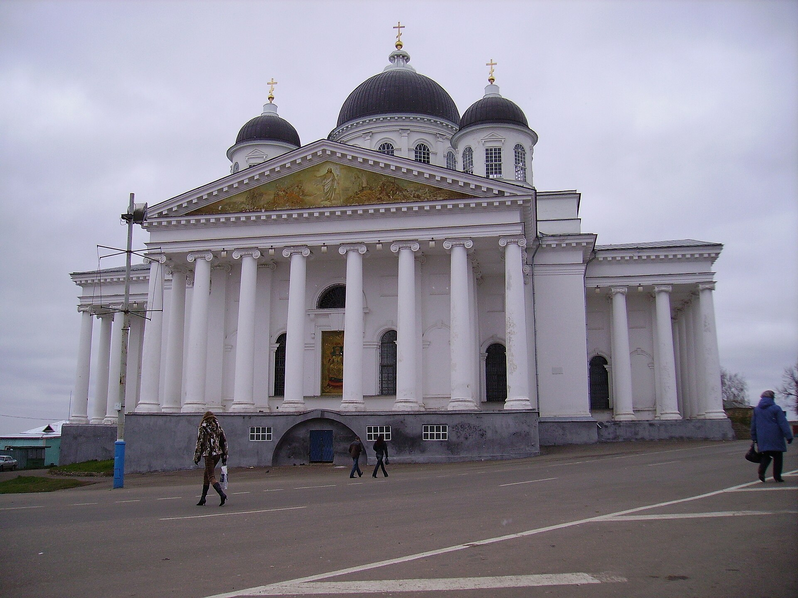

Восемь самостоятельных экспедиций одного дня или уикенда: от индустриального искусства Выксы и гиперболоидов Шухова до пушкинского Болдина и озера Светлояр.
Каждая карточка содержит точную дорожную телеметрию: дистанцию от центра Нижнего Новгорода, оптимальный транспорт и GPS-координаты.
Нижний Новгород — родина судов на подводных крыльях Ростислава Алексеева. С мая по сентябрь от причала №8 у Чкаловской лестницы ходят регулярные рейсы по области.
Проход через шлюзы Нижегородской ГЭС с причаливанием прямо у деревянного «Города мастеров» в Городце.
Живописный маршрут вдоль крутых правобережных откосов к белокаменным стенам Желтоводского Макариева монастыря XVII века.
Водная прогулка по Оке с высадкой на причале у подножия 128-метровой гиперболоидной башни Шухова.